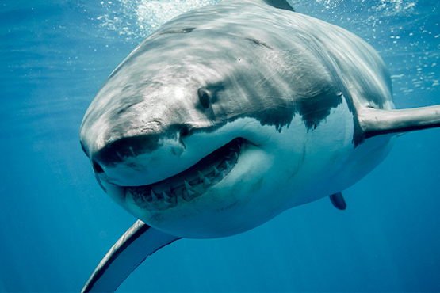

Tipos de tiburones
A continuación hacemos un recorrido marino por algunas de las especies de tiburones más asombrosas que habitan los océanos. ¿Te apetece conocerlos y hacer un interesante viaje acuático por los fondos marinos?

- Tiburón blanco. [Carcharodon carcharias]
- Tiburón martillo. [Sphyrna mokarran]
- Tiburón tigre. [Galeocerdo cuvier]
- Tiburón alfombra manchado. [Orectolobus maculatus]
- Tiburón Peregrino. [Cetorhinus maximus]
- Tiburón azul
- Tiburón vaca.